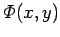
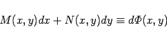
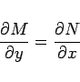
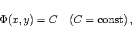

Inhalt Index DeskTop Bronstein

 Differentialgleichungen Gewöhnliche Differentialgleichungen Differentialgleichungen 1. Ordnung Wichtige Integrationsmethoden
Differentialgleichungen Gewöhnliche Differentialgleichungen Differentialgleichungen 1. Ordnung Wichtige Integrationsmethoden


Exakte Differentialgleichung wird eine Gleichung der Form
genannt, wenn eine Funktion  existiert, die der Gleichung
|  | (9.9b) |
genügt, d.h. wenn die linke Seite von (9.9a) das totale Differential einer Funktion ist. Die notwendige und hinreichende Bedingung dafür, daß die Gleichung (9.9a) eine exakte Differentialgleichung ist, besteht darin, daß die Funktionen M(x,y) und N(x,y) sowie ihre partiellen Ableitungen 1. Ordnung in einem einfach zusammenhängenden Gebiet stetig sind und die Bedingung
|  | (9.9c) |
erfüllen. Das allgemeine Integral von (9.9a) ist in diesem Falle die Funktion
|  | (9.9d) |
die gemäß Berechnung der Stammfunktion (8.132b) als Integral
berechnet werden kann, wobei x0 und y0 beliebig gewählt werden können.